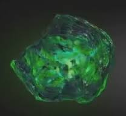

| Name |
Color |
Powers and capabilities |
images |
| soul |
orange |
The Soul Stone eventually found its way to Vormir where it became concealed in a shrine, accessible only to those who were willing to sacrifice someone that they loved. In 1945, the Space Stone banished Red Skull to the planet after he had abused its power, due to knowing |
|
| time |
green |
The Time Stone was one of the six Infinity Stones, the remnant of singularity that predated the universe. It had the ability to manipulate time, even in places "beyond" time, such as the Dark Dimension. It was contained inside the Eye of Agamotto under the protection of the Masters of the Mystic Arts, who swore to protect it. |
 |
| space |
blue |
he Space Stone was one of the six Infinity Stones, the remnant of a singularity that predated the universe, which represented the element of space. Housed within the Tesseract, over the course of history it was wielded by many individuals, including Johann Schmidt of HYDRA, Mar-Vell of the Kree Empire, the Skrulls, and Loki of Asgard. During the Infinity War, the Tesseract was shattered by Thanos, who put the Space Stone inside his Infinity Gauntlet |
 |
| mind |
yellow |
The Mind Stone is one of the six Infinity Stones, the remnant of a singularity that predated the universe, which governed over the fabric of mind. It was previously wielded by Loki inside his Scepter who received it as a gift from Thanos for the Chitauri Invasion. After the Battle of New York, the Scepter was confiscated by HYDRA, whose scientists used it to give extraordinary powers to the twins Wanda and Pietro Maximoff. |
 |
| reality |
red |
The Reality Stone was one of the six Infinity Stones, the remnant of a singularity that predated the universe, which represented the fabric of reality. Liquefied into a dark red fluid called the Aether (pronounced ēTHər), the Dark Elves and their leader Malekith intended to use it to revert the universe to its state of primordial darkness. |
 |
| power |
purple |
The Power Stone was one of the six Infinity Stones, the remnant of a singularity that predated the universe. The Power Stone was a powerful weapon capable of granting a person great, cosmic power, but was highly likely to kill any organic beings that touched it. It was used by Eson the Searcher until it was hidden for millennia on the planet Morag inside the Orb.
|
 |